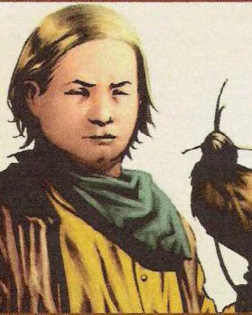

Before the World Moved On
Young Roland Deschain
Roland becomes a gunslinger at the unheard-of age of 14 after being manipulated into taking the "trial of manhood" by Marten Broadcloak, his father's adviser and alias of Randall Flagg. Marten has an affair with Roland's mother and makes sure Roland finds out about it, prompting Roland to request his trial in order to gain his guns and exact revenge on Marten. In the trial, Roland must defeat his teacher, Cort, using a weapon of his choosing. He chooses a hawk named David and defeats Cort. Roland sacrifices David to win the fight, setting the tone for Roland's future choices in life. Despite Roland's victory, Cort and Roland's father convince Roland to bide his time before seeking retribution.
Roland is a 30th-generation descendant of his world's version of King Arthur, referred to in the series as Arthur Eld. Even his guns were originally made of the melted-down metal from the legendary Excalibur sword.
Cuthbert Allgood
Cuthbert is Roland Deschain's childhood best friend, and a member of his original ka-tet. Roland and Cuthbert are described as having been playing together since they were toddlers.
Cuthbert, often called Bert, is first featured in The Gunslinger, but he does not play a major role in the series until Wizard and Glass, the fourth volume in the series. Cuthbert is characterized by his outwardly flippant, care-free view of the world. He constantly makes jokes, often testing the nerves of his companions. He is notably skilled with a sling-shot: it is said that he could 'take a bird on the wing at 50 yards' with it. This is a skill that comes in handy on many occasions in Mejis when the boys cannot openly carry their guns.
Cuthbert is quick-witted and sometimes has a way with words—his proclivity for words can be noticed as he often stops to repeat and muse over phrases he finds to be nice and 'round'. Physically, Cuthbert is described as being trim and tall with shoulder-length dark hair and dark eyes.
During the battle of Jericho Hill, Cuthbert is shot through the eye by an arrow fired by Randall Flagg.
Alain Johns

Alain is one of Roland's original ka-tet, and along with the gunslinger and Cuthbert is evacuated to Mejis for safety, due to the ongoing war against John Farson. Alain is strong in the 'touch', which is the mid-world term for a combination of telepathy, precognition, and hypersensitivity to the guiding hand of Ka.
Alain is described as being stout with blond hair. He is calm, reserved and often plays the role of level-headed mediator between ever pragmatic Roland and ostensibly care-free Cuthbert—particularly when Susan Delgado is seen to be interfering with Roland's decision making.
After Mejis, Alain joined Roland, Cuthbert, and Jamie on their quest for the Dark Tower.
Shortly before the battle of Jericho Hill, the last stand by the gunslingers of Gilead against Farson's men, Alain was accidentally killed by Roland and Cuthbert, who mistook him for an assassin in the night.
Jamie De Curry
Jamie De Curry was a member of Roland Deschain's original ka-tet. He grew up and trained with Roland under Cort and Vannay in Gilead. He was the first to discover Roland's plan to attempt to finish his training (by fighting Cort, their veteran teacher) at the unprecedented age of 14.
He is characterized by a birthmark on his face, leading some in Gilead to refer to him as "Jamie of the marked face." He was killed by a sniper at the Battle of Jericho Hill while pushing Roland from the line of fire. It's stated by Roland that as a child he excelled in archery—the use of a bow and 'bah' (crossbow)—far more so than Roland himself, although by the time of the Battle of Jericho Hill he is a Gunslinger, like the rest of Roland's ka-tet.
Jamie figures prominently in the novel The Wind Through the Keyhole, traveling with Roland to investigate rumors of a shape-changing "skin-man" that is attacking a frontier town. In this novel, his birthmark is described as being a deep red one on his hand, making it appear as if it has been dipped in blood, and he has the nickname "Jamie Red-Hand."
__________________________________________________
Allies of the Ka-Tet
Susan Delgado
Susan Delgado is a resident of Hambry, in the Barony of Mejis, where the 14-year-old Roland and his ka-tet have been sent for their own safety.
Susan's father was purportedly killed in a horseback riding accident, which Susan later learned was a murder premeditated by the town's leadership. Shortly before Roland's arrival, Susan has been cajoled by her aunt Cordelia into becoming a concubine, or "gilly", for Mejis' mayor, Hart Thorin. Although Susan is to be paid for her services, she is a recognized consort and any heir she bears to the heretofore-childless Thorin will be considered legitimate.
Before consummating her relationship with Thorin, however, she falls in love with Roland and becomes involved in the young gunslinger's plans to prevent John Farson from using an oilfield near Hambry to supply his troops with crude oil.
When Roland and his friends are framed for Thorin's murder and arrested, she breaks them out of jail and helps them escape Hambry. Before she can flee, however, she is captured, brought back to town, and publicly burned at the stake as an alleged accomplice in the murder.
At the time, she is already pregnant with Roland's first child. Roland is devastated by her death—not just because of his love for her—but because, when confronted with the choice of returning for her or setting out for the Dark Tower and thus saving all of creation, he chose the Tower, thus condemning her to death.
Roland believes that Susan Delgado was the only true love of his life.
Sheemie Ruiz
Sheemie was a mildly mentally handicapped tavern boy at a saloon in Hambry. Sheemie assisted Roland and his first ka-tet in preventing the followers of John Farson, and more specifically, the Crimson King, from reviving the Great Old Ones' war machines, later following the group back to Gilead.
Sheemie joined Roland's ka-tet briefly and helped the gunslingers ward off the Crimson King's followers until he and his mule Capi mysteriously disappeared. However, while Roland assumes Sheemie is dead, he is not; he had been captured by the low men and taken to the Devar-Toi, the Breaker prison, because of his telepathic abilities, which remained unknown to Roland's ka-tet.
He reappears in the series' final novel and assists the new ka-tet in defeating the low men and the taheen. However, during the battle, he steps on a piece of glass, causing an infection (accelerated by the "poison air" around Thunderclap).
While escorting Susannah to Fedic on the train, he dies of blood poisoning. Although Susannah never learns this, she is indirectly responsible for his death, as it is her bullet that breaks the glass out of his window, causing it to be there for him to step on.
Cortland Andrus
Teacher of Roland's original ka-tet. Roland earned his guns by defeating him with the hawk David, who was mortally wounded in that battle.
After Roland's challenge, Cort laid in his cabin for a week in a coma, being tended by two nurses. Cort was often rough handed with his students, using physical punishment and denial of food to punish mistakes. He also fancied calling the prospective gunslingers "maggots".
According to Roland, he is murdered soon after Roland's class graduates. He acts as a sort of a spiritual guide to Roland throughout the series, his voice and teachings popping up in the Gunslinger's mind every so often as Roland needs to reflect upon his training.
Abel Vannay

Also known as "Vannay the Wise", he was the other primary tutor of Roland's ka-tet and of apprentice gunslingers. Known mostly for his wisdom and forbearance, Vannay's analytical method of instruction and pacifistic nature serve as strong counterpoints to the ruthless application of force and cynical thought process exercised by Cort.
It is mentioned that he walks with the assistance of a black ironwood cane. His only known relative was his son Wallace, who played with Roland as a toddler; however, he died very young of an illness. Vannay would become one of the many victims to fall prey to the forces of John Farson in the battle for Gilead.
______________________________________________
After the World Had Moved On
Roland Deschain
Roland is alone at the beginning of the series, following the way of ka, a variant of destiny.
Roland is the last surviving gunslinger and is possessed (or, as he describes it himself, "addicted") by a quest to reach The Dark Tower, the axis upon which infinite numbers of parallel worlds rotate. (Eddie Dean, an ex-heroin addict and member of Roland's ka-tet, calls Roland a "Tower junkie.") The Dark Tower is under assault by the Crimson King, Lord of Discordia, a Satanic figure bent on destroying the Dark Tower by undermining the "Beams" that support it.
In the first novel, The Dark Tower: The Gunslinger, Roland's original desire is simply to climb to the Dark Tower's top to question whatever god dwells there, but ka has greater plans for him.
The ka-tet he acquires during the series bears many resemblances to his childhood ka-tet, who were all killed trying to help Roland on his quest. How he treats his new ka-tet when faced with decisions between their lives and his quest is a key component of the novels.
Ultimately, his ka-tet represents a chance for redemption and a means by which he can ultimately change his own ka.
Eddie Dean
Eddie was originally a 23-year-old heroin addict from New York City in 1987. He has a deep attachment to his brother, Henry Dean, despite his constant abuse (his brother was the one who got him addicted to heroin). Henry was jealous of Eddie's natural talent and uses Eddie's admiration of him to tease him until Eddie became self-conscious about it. Eventually, we find out that Eddie's talent translates into being a gunslinger. Roland notes that he was a born gunslinger.
Roland initially thought that Eddie was weak-willed, narcissistic, and foolish. Although he initially disliked Eddie's jokes, he came to realize that Eddie's sense of humor was actually reminiscent of his old companion Cuthbert Allgood.
As Eddie kicks his drug addiction and completes his gunslinger training, his character develops and he becomes reliant on his instincts and ka (a concept he originally described as "ka-ka").
One of Eddie's talents is escaping unscathed in times of trouble, something Henry recognized early on. He once declared that if he could have one person to have his back in a time of trouble, it would be Eddie because he could "convince the Devil to set himself on fire" if he had to.
Susannah Dean / Odetta Holmes / Detta Walker / Mia
Odetta Holmes was the only child of Dan and Alice, a wealthy black couple, from New York City.
At the age of five, serial killer Jack Mort dropped a brick on Odetta's head, causing her to be in a coma. Out of this traumatizing incident, Odetta's damaged mind created a completely separate second personality named Detta Walker.
The two personalities end up being poles apart. Odetta is a morally righteous intellectual with a significant level of education and class who participates in civil-rights protests. Detta is a violent, base individual ruled by sexual desire and fueled by hatred towards the white people Odetta passively resists. However, the two personalities are completely unaware of each other's existence.
Twenty years later the same man, although possibly unaware of the coincidence, attempted to kill Odetta again by pushing her in front of the A-Train at Christopher Street Station. At the last second, a man pulled her out of the way, although her legs were severed by the train, placing her in a wheelchair for the rest of her life.
At that point, the Detta Walker personality began to assert more control over their shared mind. For the three years following the loss of her legs, Odetta experienced periods of blankness, which her intellect fills in with fictional events. Detta, too, suffers the same effects when not in control, but she at least realizes periods of time are missing, though she chooses to ignore this in favor of following her desires. This behavior persists until Roland Deschain "draws" Odetta/Detta into Mid-World from New York City in 1964.
Jake Chambers
Jake is a smaller, blonde version of Roland. He is described as possessing sharp senses, fearless demeanor and desire to find where he belongs on the quest for the Dark Tower. Even without directions from Roland, Jake Chambers seems to have strong survivor instinct in the mix of the worlds. Due to the fact that he was killed by the man in black, he often gets overwhelmed about his role in the world and takes potential signs and hints from the universe very seriously. He finds it very important that the ka-tet be open and honest with one another.
Jake and Roland develop a very strong father-son bond throughout the series.
Jake also resembles Alain Johns, another gunslinger, with their stable, reserved personalities and their talent with the psychic skill referred to as "the touch."
Oy

Oy is a billy-bumbler, a primary character in The Dark Tower Series, and a member of Roland Deschain's second ka-tet. Oy first appears in The Dark Tower III: The Waste Lands and appears in every subsequent book.
Oy first approached the ka-tet timidly as they camped on the road to Lud, encouraged by Jake Chambers, who quickly befriended him. Jake called to him "Come on, boy!", to which Oy replied with his new name. Oy had been ejected from his pack, possibly due to his aptitude at mimicry, and was happy to follow Jake, who he calls "Ake".
Oy and Jake develop a special bond that translates into telepathy and the ability to switch bodies as they ran from the old vampires in the bowels of the Dixie Pig. At the town hall meeting in Calla Bryn Sturgis, Oy even performed the same self-introduction, including the bow.
___________________________________
The Man in Black
Walter Padick / Randall Flagg / Walter O'Dim / Marten Broadcloak
Walter Padick also known as Randall Flagg and The Man in Black is the secondary antagonist of The Dark Tower Series, as also the archenemy of Roland Deschain.
Walter is the main antagonist of the Stephen King multiverse.
Walter was introduced as The Man in Black who Roland pursues in The Gunslinger. He is a demonic sorcerer and an emissary of the Crimson King who goes by many names including Randall Flagg, Walter O'Dim, Rudin Filaro, Raymond Fiegler, Richard Fannin, Walter Hodji, Walter Farden, The Walkin' Dude, The Covenant Man and Marten Broadcloak. He first appears as the main antagonist in Stephen King's The Stand before returning as the main antagonist again in The Eyes of the Dragon, as Randall Flagg.
Click to return to top